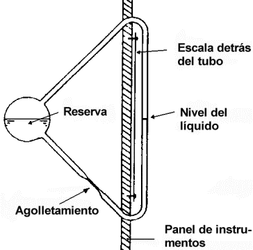
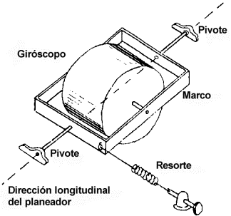

Teoría de Vuelo para Pilotos de Planeador
Stafford Allen
Capítulo VIII b
LOS INSTRUMENTOS PARA EL VUELO A CIEGAS
Si el
velero va a ser volado dentro de nubes, los instrumentos que hemos mencionado hasta ahora
no serán suficientes. Cualquier piloto que vuele sin un objeto a la vista en base al cual
pueda orientarse, después de uno o dos minutos perderá completamente su sentido de la
orientación. No será capaz de distinguir entre un viraje regular y el vuelo recto, y su
brújula no lo ayudará desde que sus indicaciones son muy irregulares cuando el planeador
se encuentra virando.
Asimismo,
será incapaz de distinguir entre vuelo nivelado, una trepada y una picada, aunque su
velocímetro y el ruido y conocimiento de su velero lo ayuden. Por desgracia, la velocidad
del planeador se relaciona más con la situación que la máquina tenía unos pocos
segundos antes que con su situación actual. Consecuentemente, el piloto se siente
inclinado a corregir en exceso, con lo que provocará una serie de oscilaciones. Es de
hacer notar que tampoco los pájaros pueden volar sin visibilidad. En el caso de los
murciélagos éstos emiten chillidos cuyos ecos recogen para orientarse, es decir, que
utilizan una especie de radar.
El vuelo a
ciegas supone una técnica especial, un paso mas allá del pilotaje experimentado. Muchos
pilotos no llegan a dominarla nunca porque ofrece inconvenientes muy particulares. Los
factores fisiológicos que dan el sentido del equilibrio al ser humano suelen jugar malas
pasadas cuando se está, volando a ciegas. Fundamentalmente, la vista proporciona al
hombre los elementos para mantenerse en equilibrio.
Pero cuando esta falta, toman el comando otros factores, tales como los canales
semicirculares del oído. En su interior las células ciliares, como pistilos que se mecen
en un medio líquido, trasmiten al cerebro la posición o desplazamiento del cuerpo.
Cuando avanzamos, las células ciliares se inclinan hacia atrás por la inercia y las
finas terminaciones nerviosas trasmiten ese dato al cerebro. Pero cuando el cuerpo se
detiene se produce un fenómeno inverso, puesto que al inclinarse las células ciliares
hacia adelante dan la impresión de que el cuerpo se desplaza hacia atrás, aunque está
inmóvil. Como los canales son tres, ubicados en ángulo recto cada uno respecto a los
otros dos, esa misma sensación engañosa se repite respecto al movimiento lateral o a los
desplazamientos verticales. Cuando caminamos o nos mecemos la vista suple esa sensación
equivocada y el cerebro elige la que concuerda con la realidad. Pero cuando no vemos el
mundo exterior el cerebro sólo dispone de las sensaciones que le envían los canales
semicirculares, con lo que fácilmente es llamado a engaño.
Piénsese
entonces en lo que ocurre cuando volando a ciegas dentro de una nube, sin ver el horizonte
que nos sirve de testigo y ante cuyo desplazamiento relativo reaccionamos automáticamente
para mantener el planeador nivelado, la máquina inicia un viraje escarpado y se
desarrolla sobre el cuerpo del piloto una fuerza centrífuga que siente que "lo
proyecta hacia afuera". Las células ciliares reaccionan al estímulo físico y en
determinadas circunstancias el cerebro interpreta que estamos haciendo un viraje en
sentido contrario al real.
Para
proporcionar al piloto la información que necesita cuando se trata de vuelo a ciegas, el
planeador debe ser equipado con instrumentos para este tipo de vuelo. Dichos instrumentos
incluyen el indicador de giro y el horizonte artificial. Los indicadores de nivel
transversal y longitudinal no son, hablando con propiedad, instrumentos para vuelo a
ciegas, pero resultan una considerable ayuda en nube. Para el vuelo a ciegas es suficiente
el indicador de giro como suplemento de los demás instrumentos. Si se instala un
horizonte artificial, las cosas serán mucho más fáciles.
NIVELES
Los
niveles son los instrumentos más simples, por lo que los describiremos en
primer lugar. El nivel transversal no es más que nuestro viejo amigo, el nivel del
albañil, es decir, un tubo de vidrio curvado cóncavo hacia abajo, lleno de solvente, con
una burbuja de aire. Este nivel se encuentra montado a lo ancho en el panel de
instrumentos.
Si el
velero se encuentra volando recto y las alas están niveladas, la burbuja estará
centrada, con lo que indica que no hay fuerzas no equilibradas actuando sobre las
superficies del aparato. Si el planeador derrapa o desliza en
un viraje o en vuelo recto, la burbuja se desplazará de su posición central. Por lo
tanto, el nivel transversal no indica el ángulo de inclinación; simplemente muestra si
la inclinación es correcta para un viraje determinado. La burbuja tiene la desventaja de
que parece escaparse durante
todo el tiempo. Por esta razón algunas veces se dice que hay que perseguir la burbuja con la
palanca, en lugar de tratar de volver a su lugar la burbuja mediante
la palanca.
En un
diseño mejor, este instrumento presenta el tubo de vidrio curvado con la concavidad hacia
arriba y lleno de solvente como antes, pero en lugar de utilizar una burbuja para obtener
las indicaciones se usa una bolita de metal. Esta bolita puede desplazarse libremente a lo
largo del tubo curvado y parece obedecer al movimiento de la palanca en lugar de tener que
ser perseguida. Esta
forma de nivel generalmente se ubica dentro del indicador de giro, en cuyo caso el
instrumento es conocido como indicador de giro e inclinación o
ladeo. Este es un nombre incorrecto desde que la bolita no indica
el ángulo de inclinación.
El nivel
longitudinal es un instrumento que trabaja sobre principios muy similares. índica al
piloto, mediante la altura de una columna de liquido coloreado situada en un tubo de
vidrio ubicado en el panel de instrumentos, si la maquina se encuentra cabreada o picada.
Detrás del tubo, por lo general, se inserta una escala como referencia.
Figura 20 - Nivel

La figura 20 muestra las partes principales de este instrumento y resulta evidente que no es más que una forma particular de nivel. El estrechamiento en la rama inferior tiene como objeto evitar que el líquido se desplace violentamente en condiciones de extrema turbulencia.Incluso puede reemplazar al velocímetro en esa situación y muestra lo que está ocurriendo con respecto a la posición del aparato, mientras que el velocímetro indica el efecto de la posición del aparato algunos segundos antes. Además, no se hiela justamente cuando más lo necesitamos. Actualmente este instrumento no se usa.
EL INDICADOR DE GIRO
El
indicador de giro es el instrumento realmente vital para el vuelo a ciegas.
El dial de este instrumento varía en apariencia según los distintos modelos, pero todos
presentan una aguja vertical que se mueve a partir de una línea de referencia hacia la
izquierda o la derecha. Cuando la aguja se halla centrada el planeador no está
virando, es decir, está volando en línea recta. Cuando la aguja se desplaza hacia la
izquierda el planeador está virando hacia la izquierda y viceversa. Cuanto más se
desplaza la aguja mayor es el ángulo de viraje. Este efecto se obtiene mediante un
pequeño giróscopo situado dentro del instrumento.
Figura 21 – Indicador de
giro

La figura 21 muestra el cerebro del indicador de giro. El giróscopo, que rota muy rápidamente, se encuentra montado de tal manera que sus ejes longitudinal y transversal tienen la misma disposición que los del planeador. El marco en el cual se halla montado pivota sobre el eje longitudinal de tal manera que el giróscopo, junto con el marco, pueden rolar, pero este movimiento de rolido es controlado mediante un resorte que mantiene el marco nivelado.Una de las
extrañas propiedades del giróscopo es la de que cuando está en marcha, si se lo hace
girar alrededor de su eje el aparato, a su vez, girará en ángulo recto respecto al
movimiento de rotación que se le imprime, hasta que su propio eje de rotación coincide
con el eje de giro. Esto se denomina movimiento de precesión y
parece bastante complicado, pero si no puede alcanzar a comprenderlo no importa.
Veamos
nuevamente la figura 21. Si el instrumento completo es girado sobre el eje vertical, como
ocurre cuando el planeador vira, el giróscopo tratará de efectuar un movimiento de
rolido, junto con el marco, hasta que su eje coincida con la vertical real. No puede
lograrlo porque el resorte lo impide, pero tratará de girar sobre su eje longitudinal
(rolar), y el esfuerzo variará de acuerdo a la inclinación del viraje. Este movimiento
de rotación longitudinal del marco es mostrado por el movimiento de la aguja a través de
una serie de palancas.
La
sensibilidad o el movimiento de la aguja para un viraje determinado pueden alterarse
ajustando la tensión del resorte. Para reducir la sensibilidad se aumenta la tensión del
resorte. El indicador de giro diseñado para aviones de motor, por lo general debe tener
una sensibilidad considerablemente reducida cuando es utilizado en planeadores, porque por
lo común los virajes son mucho más escarpados. Si no se procede de esta manera, la aguja
se desplazará hasta el tope en cualquier viraje suave.
¿Cómo se
logra que el giróscopo se mantenga en movimiento? La forma más simple es instalar
pequeñas aletas en la parte exterior de la rueda del giróscopo, producir una succión de
aire por medio de un venturi y disponer una pequeña corriente de aire en la caja del
instrumento para mover la rueda del giróscopo. Esto presenta serios problemas para el uso
volovelístico. En primer lugar, necesitamos un venturi desmesurado para lograr suficiente
succión, debido a nuestra baja velocidad y, en segundo lugar, el venturi tiene una
lamentable tendencia a obstruirse con hielo justamente cuando más se lo necesita. es
decir, en nube. Este sistema funciona perfectamente en aviones a motor dado que la alta
velocidad permite disponer de un venturi de tamaño razonable, el cual puede colocarse
cerca de un escape caliente para evitar el hielo.
La mejor
forma de hacer funcionar el giróscopo de un planeador es por medio de la electricidad. La
rueda del giróscopo se convierte aquí en el núcleo de un pequeño motor eléctrico. Una
pila proporciona la energía y desde que el motor eléctrico no mueve nada, sino que se
mueve a sí mismo, el consumo de corriente es muy pequeño, generalmente del orden de 0,1
ampere. Incluido en el motor se halla un contacto centrífugo que se abre cuando el
núcleo alcanza su velocidad normal, con lo que impide que exceda de cierta velocidad y
ahorra corriente. El contacto vuelve a cerrarse tan pronto como la velocidad de rotación
disminuye y requiere nuevamente corriente.
El
indicador de giro es un instrumento relativamente seguro, pero la sensibilidad varía por
lo general de un instrumento a otro. Por lo tanto, conviene familiarizarse con cada
instrumento volando con visibilidad hasta tener alguna idea de lo que significa cada
indicación de la aguja en términos de grado de viraje.
EL HORIZONTE ARTIFICIAL
Si usted puede conseguirlo y su planeador puede
soportar el peso extra sin exceder el máximo permisible, el instrumento ideal es
el horizonte artificial. Este instrumento no nos habilita necesariamente para volar a
ciegas, pero es indudable que hará las cosas mucho más fáciles. Hay una gran cantidad
de pilotos que son felices volando a ciegas con un indicador de giro y ladeo y los
instrumentos básicos normales y que no encuentran problema en llevar a cabo las más
prodigiosas trepadas en nube. Pero hay también muchos pilotos que utilizan para el vuelo
a ciegas como agregado un horizonte artificial. La verdad parece ser que el horizonte
artificial realiza un buen trabajo, pensando por nosotros. En cambio, el indicador de giro
y ladeo y los instrumentos básicos nos dirán todo lo que necesitamos saber para volar
con éxito en nube, pero su información debe ser interpretada previamente por el
cerebro para formar un panorama exacto de lo que está ocurriendo, y esto en un momento en
que nuestros sentidos nos pueden estar diciendo las cosas más raras. El horizonte
artificial recoge la misma información básica, pero nos presenta el resultado en forma
de un cuadro cuyo mensaje es obvio.
Si miramos
el horizonte artificial instalado en un panel de instrumentos podremos ver un pequeño
modelo de avión, en blanco, visto por detrás, contra un fondo negro. Detrás de este
modelo hay una línea blanca horizontal, la cual es el horizonte artificial, del cual el
instrumento toma su nombre. Cuando está en funcionamiento (recuérdese que este es un
instrumento giroscópico) esa línea blanca permanece paralela al horizonte y lo sigue en
su movimiento de ascenso y descenso. Es decir, si la nariz del velero se inclina bajo el
horizonte, la pequeña línea blanca se elevará por
Esto suena
muy fácil pero no lo es tanto. El problema principal, por supuesto, es el de que nuestros
sentidos nos pueden indicar otra cosa y entonces nos inclinamos a dudar de la evidencia
del instrumento. Sin embargo, con un poco de práctica el vuelo a ciegas con un horizonte
artificial puede llevarse a cabo con mucho menos esfuerzo mental que con un simple
indicador de giro y ladeo y los instrumentos básicos.
¿Cómo
trabaja el horizonte artificial? Podría escribirse un libro entero sobre este asunto y
tendríamos que comenzar con un tratado sobre las propiedades del giróscopo. Resulta
importante investigar los principios básicos de este instrumento, pero no intentaremos ir
más allá de esto.
Dentro de
la caja del instrumento se encuentra una rueda giroscópica, pero este giróscopo es más
bien distinto del que hemos visto en el giro y ladeo. El del horizonte artificial es lo
que se denomina un giróscopo libre, es decir, con movimiento universal, de tal manera que
puede girar en cualquier dirección, libre de todo resorte. Como se recordará, en el giro
y ladeo el giróscopo solamente podía rotar sobre su eje longitudinal y aun ese
movimiento era controlado por un resorte. En el horizonte artificial el giróscopo tiene
libertad para girar sobre sus ejes longitudinal y transversal. El giróscopo rota con su
eje vertical. (Hablando con propiedad, esto no es completamente verdadero, como veremos
luego).
Una de las
propiedades del giróscopo es la de que, si se halla montado sobre su centro de gravedad y
puede efectuar un movimiento universal, cuando es rotado tiende a mantener inalterable su
posición en el espacio, aunque sus puntos de apoyo sean girados sobre los ejes
longitudinal y transversal. Esto significa que aunque inclinemos nuestro planeador sobre
estos dos ejes, el giróscopo tenderá a mantener sus ejes apuntando verticalmente hacia
arriba y hacia abajo. Si acoplamos el movimiento del giróscopo a la línea blanca del
cuadrante de un instrumento, tendremos un horizonte artificial.
Un
instrumento tan simple como este puede tener, sin embargo, serias fallas. En primer lugar,
es virtualmente imposible equilibrar perfectamente el giróscopo en sus puntos de
movimiento universal y aun si estuviera perfectamente equilibrado la fricción en los
puntos de apoyo y rotación le haría desviarse en un lapso determinado. En segundo lugar,
para comenzar habría que fijar el pivote en la vertical. Para solucionar estos problemas
todo horizonte artificial tiene algún dispositivo que incorpora pequeñas fuerzas para
mantener el giróscopo vertical en caso de que éste tienda a desviarse. Aquí se presenta
el primer obstáculo. Este mecanismo de erección sólo puede detectar un desvío de la
vertical del giróscopo por comparación de su posición con la de alguna clase de
plomada. Este sistema de plomada tratará, por supuesto, de mantener el eje del giróscopo
en la línea vertical del planeador cuando éste se halla virando correctamente, de la
misma manera que la bolita o la burbuja del nivel permanecen en el centro. Esto introduce
un error cuando el velero vira, pero desde que el sistema de la plomada ejerce una
presión sobre el eje del giróscopo, que se mueve alrededor del círculo a medida que el
planeador vira, el error no es grande. En muchos instrumentos el eje se encuentra
ligeramente inclinado y por este medio el error puede ser eliminado por el movimiento de
precesión del giróscopo. Dicho error se eliminará completamente sólo en un determinado
ángulo de viraje. En todos los otros ángulos habrá algún error y el horizonte -la
línea blanca- puede mostrar un ligero error. Haciendo funcionar el giróscopo a elevadas
revoluciones se consigue que este error sea muy pequeño, pero es difícil encontrar a
qué ángulo de viraje ha sido corregido cualquier instrumento en particular.
En cuanto
a los sistemas para hacer mover el giróscopo tenemos la misma posibilidad de elegir que
en el caso del giro y ladeo: succión de un venturi o instalación eléctrica. El tipo
venturi, que trabaja tan bien en los aviones a motor presenta los mismos problemas que en
el caso del giro y ladeo, cuando se instala en un planeador. El método más satisfactorio
para dar movimiento a un giróscopo es, nuevamente, la electricidad, pero las cosas no son
tan simples en este caso. Desde que se trata de un giróscopo libre, la única forma
satisfactoria de moverlo eléctricamente es hacer de la rueda del giróscopo el rotor de
un pequeño motor de inducción de tres fases.
La
corriente continua, que es la que podemos obtener de una pila, no sirve en este caso
porque tiene que ser conducida dentro y fuera del núcleo que gira y esto es virtualmente
imposible sin interferir con el movimiento libre del giróscopo. Aquí la instalación se
convierte en un formidable problema. En primer lugar, necesitamos una fuente de poder, por
lo general una batería de 12 o 18 voltios; luego para obtener la corriente alternada hace
falta un convertidor rotativo. Este convertidor rotativo es una clase de motor generador
que torna la corriente continua de la batería y entrega corriente alternada de tres fases
al horizonte artificial. Por lo tanto, necesitamos disponer en el planeador de tres cosas
bastante pesadas: el instrumento en sí, el convertidor rotativo y la batería, y para
cuando haya podido conseguir todo esto, ubicarlo y conectarlo, el peso puede ser
demasiado. En realidad, en muchos casos la instalación, sumado a un piloto algo pesado,
sobrepasarán el peso máximo permitido para el planeador y, por supuesto, el certificado
de aeronavegabilidad de la máquina deberá ser corregido para limitar el peso máximo
permitido para el piloto.
En la
actualidad la introducción de sistemas transistorizados ha eliminado los problemas de
gran volumen y peso y se dispone de horizontes muy livianos y eficaces aunque, por
desgracia, bastante onerosos.
Sin
embargo, la realidad es que un buen horizonte artificial es un instrumento muy útil en un
planeador si se intenta volar en nube.
NOTA: Hemos estado tentados de cambiar y
actualizar completamente este capítulo, pero para no salirnos del marco de simplicidad de
las explicaciones básicas de esta obra sólo se hicieron ligeros retoques. Para una
completa y moderna descripción de instrumentos referimos al lector a la excelente obra de
H. Reichmaiin "Vuelo
sin Motor: Técnicas Avanzadas"
(Edit. Paraninfo).
Volver Arriba